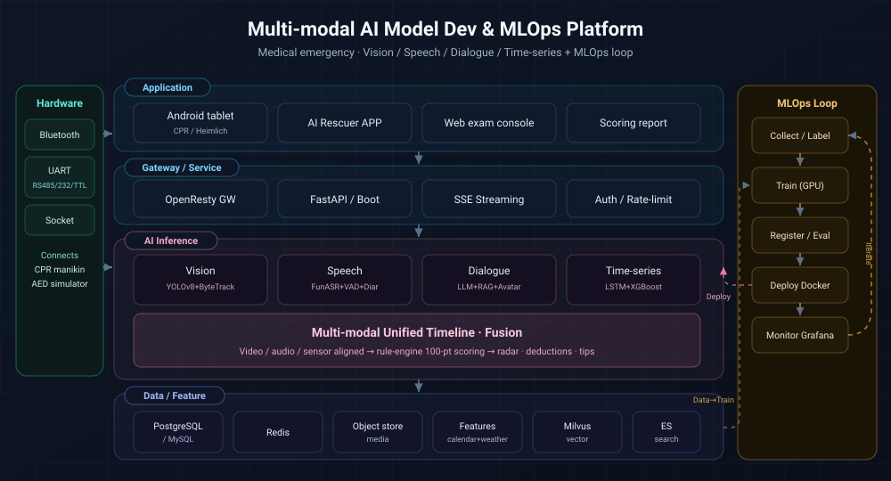
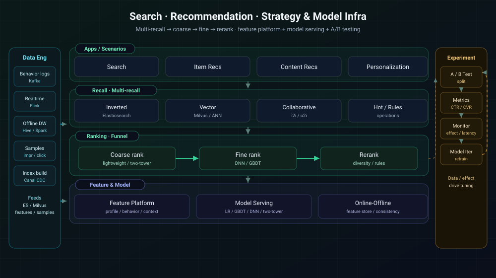
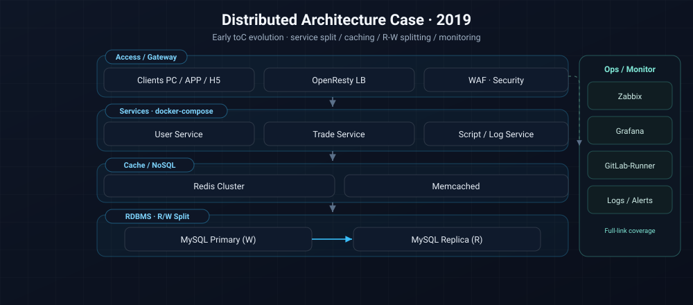
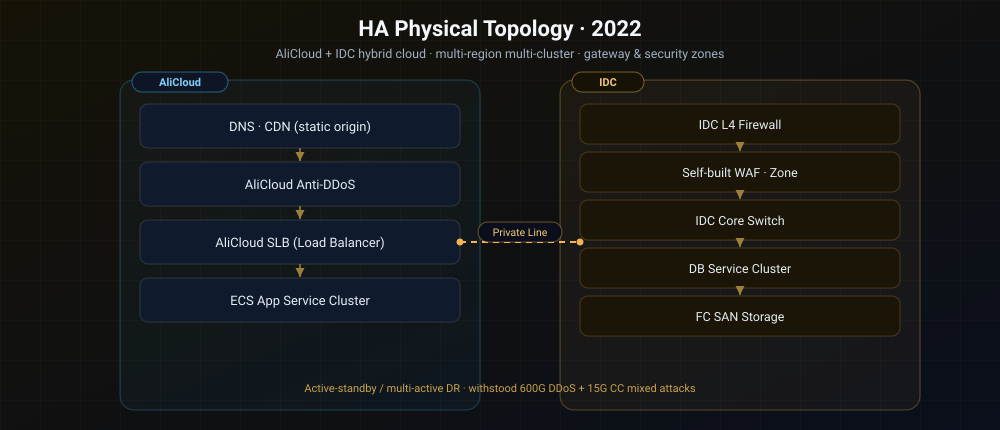
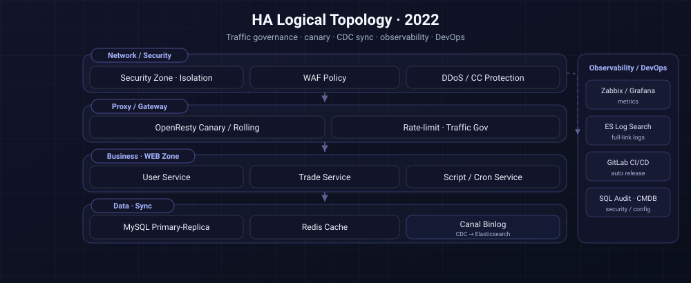

AI Paper Plagiarism Check
Paper & image similarity check for research / universities
Technical Director · Full Stack Architect · AI/Search/Distributed
Technical Director / Full Stack Architect, leading product roadmap, budget, efficiency, and delivery across toC/toB/toG.
Leading RAG intelligent dialogue, multi-modal retrieval, recall/ranking strategies, mastering Prompt, Routing, and Vector Governance.
Building multi-layer indexing for massive docs/images, covering intra-doc, strategy, full-library retrieval, and low-latency routing.
Expert in Spring Boot/Golang + OpenResty + K8s, high availability multi-active, tracing, and capacity planning.
OpenResty peak clipping, Redis caching, RabbitMQ/Kafka decoupling, supporting flash sale traffic and 400G DDoS protection.
Building CI/CD, CMDB, Zabbix/Grafana/ES logs, WAF/Bastion/SQL Audit, forming an observability closed loop.
Building cross-functional teams from 0, responsible for hiring, performance, process standards, and engineering efficiency.
Technical Director · Emergency AI + HW/SW Integration
Technical Director · Sports/Plagiarism Check/Cross-border
Full Stack Architect · R&D/Ops/Big Data
Technical Director · Golang/Java Multi-stack
Tech Lead · Tiaotiaozhu Series
PHP R&D Engineer · Earning/Chess/Gem Planet
Led the medical-emergency AI training product system, connecting Android tablets with CPR manikins / AED via multi-protocol, iterating products from basic to multi-modal AI, and delivering two AI algorithm lines: video scoring and time-series forecasting.
Led an 11-person cross-functional team, landing Android HW/SW integration and multi-modal AI (dialogue/vision/speech/time-series) on the medical-emergency training frontline, running legacy maintenance and 0→1 new products in parallel.
Keywords: Multi-modal AI · HW/SW Integration · Medical EmergencyLed Sports SaaS, Plagiarism Check, and Cross-border lines. Managed full lifecycle from prototype & budget to engineering governance & O&M.
Coordinated Sports, Check, and Cross-border product lines, personally leading budget breakdown, hiring, and engineering governance, closing the 0-1-100 lifecycle loop.
Keywords: Microservice Gov · Hybrid Cloud DevOps · Cross-functional TeamIndependently led the architecture upgrade of Pangxie Account Trading Network 1.0, balancing business refactoring, security defense, and multi-team collaboration, supporting full-link expansion of Trading, IM, and Search.
Single-handedly refactored Pangxie 1.0 architecture, building cross-region multi-active system and async search links, reducing RT by 80%, and resisting 600GB attacks via security strategies.
Keywords: Search Refactoring · HA Multi-Active · Security DefenseAffiliated · same beneficial owner as Tianzuan & Tuomei (separate entities)
Responsible for architecture and delivery of 50W DAU toC platform and multiple e-commerce projects, driving systemic migration from PHP to Java/Golang and automated O&M system.
Led 30+ team completing systemic refactoring from PHP to Java/Golang, building flash-sale gateway and full-link automation, withstanding max 400G DDoS.
Keywords: Multi-stack Collab · High Concurrency Gov · Automated O&MAffiliated · same beneficial owner as Taoyou & Tuomei (separate entities)
Led small team to complete Tiaotiaozhu PC/H5 0-1 and subsequent iterations, focusing on hybrid architecture, low-cost expansion, and high-frequency activity delivery.
Small team completed Tiaotiaozhu multi-terminal launch, hybrid architecture balancing efficiency and performance, and creating ultra-low cost expansion via docker-compose.
Keywords: Small Team Ops · Hybrid Arch · Automated ExpansionAffiliated · same beneficial owner as Taoyou & Tianzuan (separate entities)
Responsible for backend dev and maintenance of Chess, Mining, Web Games business lines, independently completing activity gameplay to high-concurrency revenue calculation.
Accumulated 70W DAU mining service and chess activity gameplay, utilizing Redis + MQ to complete cold/hot tiering and real-time revenue settlement.
Keywords: Game Backend · High Active Task Queue · Componentized OpsTechnical Director · Multi-modal AI Video Scoring
Technical Director · Time-series (Algo + Full Stack)
Technical Director · SaaS Event Trading Platform
Technical Director · Paper/Image Plagiarism Check
Technical Director · Cross-border E-commerce
Full Stack Architect · Multi-Active HA Retrofit
Upload a three-person first-aid exam video (with audio) to auto-parse actions and commands, producing a 100-point score with improvement suggestions; supports CPU / GPU container deployment.
Fuses CV (detection/tracking/pose) with speech (ASR/VAD/diarization) on a unified timeline, using a rule engine to produce explainable first-aid scoring reports.
Pitch: Multi-modal Fusion · Explainable Scoring · GPU DeploymentA blood supply/collection time-series forecasting system (algorithm + full stack), predicting volumes by blood bank / blood type to support collection planning and inventory scheduling.
Three parallel time-series models + calendar/weather feature engineering + rolling backtest, turning supply forecasting into an operable collection/inventory decision tool, with a patent draft.
Pitch: Time-series Forecasting · Feature Engineering · PatentBuilt Event SaaS from 0-1, covering registration, settlement, merchant devices, clubs, ensuring consistent experience across terminals and high-concurrency transactions.
Full-link SaaS for event organizers, leveraging microservices + OpenResty canary to ensure multi-terminal consistency and stable transactions.
Pitch: Event Trading High Concurrency · DevOps Monitoring Closed LoopMulti-modal plagiarism check system for research/gov scenarios, meeting intranet compliance, massive vector retrieval, and low-cost compute strategies.
Gov-Industry-Academia check platform, deploying Milvus + CLIP/DINOv2, supporting 5 million image vectors and global PDF retrieval, meeting intranet compliance.
Pitch: toG Security Delivery · Large-scale Vector RetrievalResponsible for cross-border independent site from prototype to overseas growth, unifying multi-site, exchange rates/taxes, recommendation algos, and automated O&M.
"Overseas Control Center" for cross-border independent site, unifying exchange rates, taxes, languages, and logistics, with AWS automation and personalized smart recommendations.
Pitch: Cross-border Data Sync · Personalized Search RecsRe-engineered infrastructure for account trading platform, covering gateway, search, IM, async links, and security strategies, supporting 8x business growth.
Account trading infrastructure re-engineering, Distributed IM + Search Links + Async Decoupling, supporting 8x growth and strengthening key & security governance.
Pitch: OpenResty Gateway · Search+MQ Decoupling · Business DoublingClick a card's title or cover to expand the project details
Paper & image similarity check for research / universities

Blood supply time-series forecasting (algorithm + full stack)

Auto-scoring of 120 three-person first-aid exam videos

Cross-border DTC site, from prototype to overseas growth
Visit my GitHub for more
Click a solution to view the full architecture diagram and notes

Vision/speech/dialogue/time-series fused on one timeline + rule-engine scoring + MLOps loop

Multi-recall → coarse → fine → rerank · feature platform + model serving + A/B testing

Early toC distributed evolution: service split, caching, monitoring, data links

Multi-region multi-cluster deployment: IDC + cloud hybrid, gateway & security zones

Logical view: traffic governance, data sync, observability & DevOps
11+ years in toC/toB/toG tracks, specializing in breaking down complex business into observable, iterable, scalable engineering systems, covering Backend, AI/RAG, Distributed Arch, and DevOps.
Spring Boot 2.x/3.x, OpenResty, DDD/CQRS, API Standards; Hybrid Cloud, Multi-Active, Capacity Planning, Tracing & Governance.
Milvus, ElasticSearch/OpenSearch, CLIP/DINOv2/ResNet, Vector Gov; Recall-Rank-Rerank, PDF/Image Parsing, Low-cost Compute.
SSE streaming dialogue, wake-up / ASR / TTS, OpenGL digital human; YOLOv8 + ByteTrack video understanding, FunASR + VAD + speaker diarization, LSTM/XGBoost forecasting.
Elasticsearch + Milvus dual engines, Canal Binlog incremental sync; recall-coarse-fine-rerank pipeline, user profiling & behavior features, personalized search & recommendation.
Spring Boot, Gin, Hyperf, ThinkPHP, Laravel; gRPC/REST, BFF, Service Decoupling & Gateway Gov, covering toC/toB/toG core business.
Sharding, R/W Splitting, Binlog CDC, Cold/Hot Data Gov; Redis Sentinel/Cluster, Canal + ES Sync, RabbitMQ/Kafka Async Decoupling.
Vue2/3, React, TS, Vite, SSR/SSG, Component Lib Gov, BFF Collab; Supporting toC Frontend & Admin/Ops Visualization.
WeChat/Alipay MiniApps, UniApp/Flutter Hybrid, H5/APP Isomorphic, Client-Cloud Security & Performance Tuning, supporting Sports/E-commerce/SaaS.
CI/CD, GitLab Runner, Ansible, Terraform, Prometheus/Zabbix/Grafana/ES Logs, OpenResty Canary/Gov, SLO/SLA System.